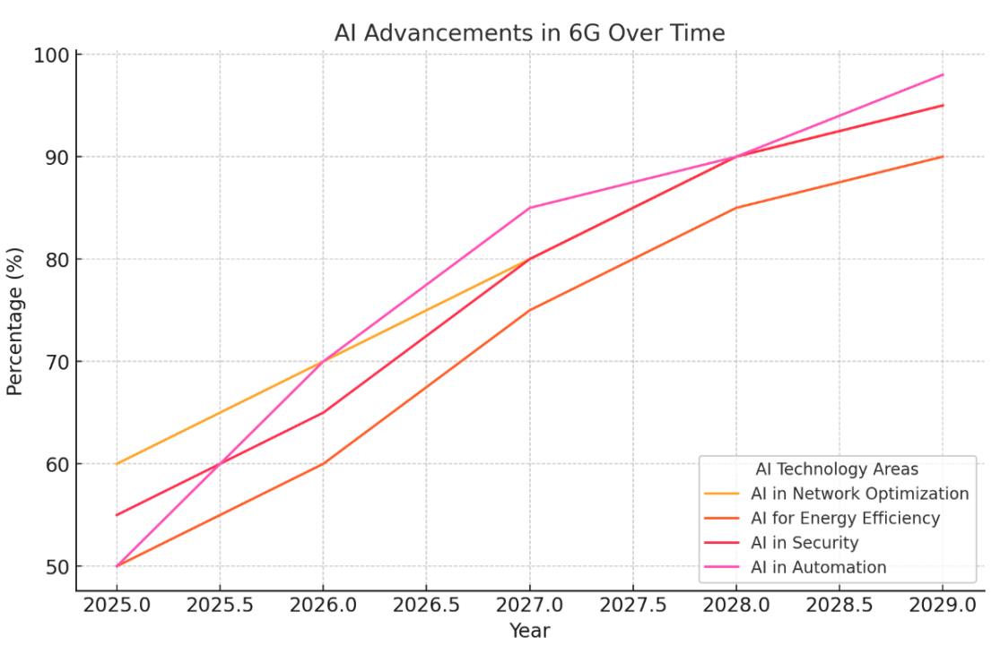

1. Introduction
This section introduced the purpose of this survey includes background of 5G and evolutions of 6G.
1.1 5G and 6G5G stands for the fifth generation of mobile communication technology. It is the wireless communication technology currently in use and is an upgraded version of 4G networks. 5G mainly through higher frequencies, advanced antenna technology and network architecture optimization to achieve a important increase in data transmission speed. Compared with 4G, 5G has better performance in several aspects, such as the peak speed of 5G up to 10Gbps, much higher than the 1Gbps of 4G. This speed can support real-time transmission of bandwidth-intensive applications such as HD video, VR/AR, and online gaming. It has lower latency. 5G latency can be as low as 1 millisecond, which is a great advantage in applications that require extremely high real-time response. 5G has a wider range of device connectivity capabilities, enabling large-scale Internet of Things (IoT) device connectivity. As a result, many applications such as smart homes, smart cities, and industrial automation have been developed in the market.
6G is the sixth generation of mobile communication technology and the follow-up technology to 5G, which is still in the research and development stage and is expected to be gradually commercialized around 2030. The goal of 6G is to further improve the performance of 5G and introduce new technologies to meet future demands. Compared with 5G, the main feature of 6G is the use of terahertz frequency bands. 6G will use the higher frequency terahertz band, theoretically enabling transfer rates of up to 1 Tbps, providing greater bandwidth support for data-intensive applications. Compared to existing 5G, 6G has ultra-low latency and high reliability. According to current research, 6G is expected to achieve near-zero latency, which is suitable for applications with higher real-time and reliability requirements, such as remote medical surgery, automatic driving and industrial control, and other scenarios with higher intelligence requirements. In 6G, AI-driven network management is also cited. When 6G technology is fully mature, it will be able to achieve dynamic allocation of resources, failure prediction and self-optimization through automation and intelligence. When it comes to global issues, 6G will enable seamless global connectivity. Because current 5G networks struggle to cover remote and hard-to-reach areas. The 6G architecture will integrate terrestrial and satellite networks. As this technology evolves, 6G can support emerging applications with more functions. For example, emerging applications such as ultra-high-definition holographic communication, AR, and Extended Reality (XR) will be mentioned below.
In general, 5G is the core of the current network, while 6G is the future network that humans are studying. 5G is focused on improving current applications by increasing network speed and reducing latency, while 6G is focused on how to use new frequency bands and artificial intelligence technology to provide smarter network support for future application scenarios.
1.2 Background of 5G and Evolution to 6G5G is now in widespread use, and the roll out of 5G networks marks a milestone in wireless communications, setting new standards in data rates, latency, and device connectivity. However, times are always moving on. The emergence of new digital technologies and the growing demand for faster and more reliable connections require a shift to 6G (1). The technologies we used in our daily life, such as holographic telepresence, and immersive AR/VR will require greater bandwidth and lower latency. And the global Internet of Connected Things is also one of the technologies we use for positioning 6G as one of the most important thing to enabler of these advancements (9).
1.3 Purpose of the SurveyThe purpose of this survey is to examine the technical developments of 6G networks and compare them with 5G. And for and architectural development are also will be mentioned in this survey. The survey combines current research and provides insights into the future trajectory of wireless communications. In this survey, we will have several topics include terahertz bands, ultra-low latency, AI integration and special 6G architectures, and also existing challenges. Taken as a whole, the evolution of 5G to 6G to meet growing connectivity needs and technological advances can lay the foundation for a thorough examination of its underlying technology.
2. Technological Advances in 6G Networks
This section introduced the purpose of this survey includes background of 5G and evolutions of 6G.
2.1 Terahertz Frequency BandsIn 6G networks, the upgrade of spectrum will be one of the important breakthroughs, this time aiming to move from the millimeter wave spectrum used by 5G to the terahertz spectrum(8). The terahertz band, if successfully deployed, will provide ultra-high data rates of over 100 Gbps for 6G networks. We can see that the data rates are important increased which means it is particularly important for applications with high bandwidth requirements. For example, the emerging technologies such as Extended Reality (XR) and HD holography will be influenced a lot in 6G networks. But in fact, the bandwidth requirements of these technologies far exceed the capabilities of 5G, and the 5G we currently use can no longer fully meet these needs. The use of terahertz spectrum will enable 6G to support these applications, and it will also be able to promote the wide application of 6G in more industries and scenarios, making it more powerful.
However, the terahertz frequency, although extremely advantageous in bandwidth, has a limited travel distance and is extremely sensitive to signal attenuation. This means that in practical applications, terahertz signals are difficult to penetrate obstacles such as buildings and are susceptible to interference from environmental factors. Advanced signal processing algorithms will also introduce dynamic adjustment and optimization of transmission paths to reduce signal loss. This challenge makes innovations in antenna design and signal processing techniques particularly important. In order to expand the propagation range of terahertz signals and increase their elasticity, more efficient antenna array technologies need to be developed in the future, which may involve miniaturization and diversification of antenna designs to improve the coverage and quality of signals. As a result, 6G will be able to provide a more stable connection experience while guaranteeing ultra-high data rates.
In addition, spectrum sharing is also a research direction in the application of terahertz band. Different devices can effectively utilize the limited terahertz spectrum resources if spectrum sharing technology is used. This avoids bandwidth waste and reduces network congestion. This suggests that spectrum sharing technology may play an important role in future 6G network architectures and provide flexible spectrum resource allocation for different applications.
2.2 Ultra-Low LatencyAchieving near-zero latency network communication is one of the goals of 6G. That is called Ultra-Low Latency. Because people will invent more applications with very high real-time requirements in the future. To achieve this requirement, network communication with near zero latency is required. In Saad’s research, he notes that applications such as multisensory Extended Reality (XR) applications, connected robotics and Autonomous systems (CRAS), and wireless brain-computer interaction (BCI) all require ultra-low latency to achieve the desired results (14). This ultra-low latency feature of 6G will become one of the core directions of its research and development. If we compared to the ultra-reliable low-latency communications (URLLC) provided by 5G, 6G will further push latency targets beyond current limits and become a new generation of network features.
6G networks require important advances in data routing, signal processing, and edge computing to achieve this ultra-low latency. To achieve this ultra-low latency, several steps and methods are required. First, 6G can adopt more advanced data routing strategies, which can shorten the transmission path of the signal. And it can also ensure that the data packet can reach the target device quickly. Secondly, 6G also needs to be optimized for signal processing. It means it can speed up the decoding and transmission of data and reduce processing latency. The application of edge computing in 6G will be further strengthened. And it is also an important step in achieving ultra-low latency. By allowing computing power from the cloud to the edge of the network, 6G can process data closer to the user faster, avoiding the delays associated with long-distance transmission. This is especially important in scenarios that require real-time response, such as we will mentioned later in autonomous driving, smart factories, and telemedicine.
In addition, network slicing technology will play its special role in the low latency service of 6G networks. In general, network slicing can split the 6G network into multiple virtual networks according to different application requirements. For addition, each network segment has a different independent resource allocation and service priority. That can make sure that latency-sensitive applications obtain high-quality network experience. This is a special feature of network slicing technology. For example, a dedicated low-latency network slice could be assigned to an autonomous vehicle to ensure that the vehicle can process and respond to dynamic information around it in real time. At the same time, the introduction of AI technology will enhance 6G's resource scheduling capabilities, dynamically adjusting bandwidth and computing resources according to real-time network conditions, further reducing network latency and improving reliability. This near-zero latency goal will not only improve the user experience, but will also drive the birth of more real-time applications, enabling people to live a more convenient and intelligent lifestyle.
2.3 AI-Driven NetworksArtificial intelligence will be at the heart of 6G networks. Gupta also wrote in "AI-Enabled 6G Networks and Applications,"(4) that using AI in 6G is capable of handling tasks such as dynamic resource allocation, predictive maintenance, and more. On the one hand, it can optimize network performance, and on the other hand, it can reduce operating costs. Machine learning algorithms are one of the ways that will be used. This will enhance 6G's adaptability to real-time network conditions, enabling the network to self-configure and maintain optimal performance in a variety of scenarios. 6G's technological advancements in terahertz bands, ultra-low latency, and AI integration, if developed rapidly in the future to push wireless communications beyond current capabilities, will enable 6G to support applications that were not previously possible. But these techniques require an overhaul of the architecture, which we'll explore in the next section.
3. 6G Network Architecture
This section introduced the purpose of this survey includes background of 5G and evolutions of 6G.
3.1 Potential Framework for 6GIn the future, the 6G architecture is expected to transform from a two-dimensional terrestrial network to a multi-dimensional framework encompassing land, sea, air, space, and interplanetary connectivity (16). This design extends connectivity to remote and challenging environments, making 6G key to future applications such as remote sensing, global iot networks, and space exploration(15).
3.2 AI-Based Network OrchestrationArtificial intelligence will play a central role in 6G networks, driving network orchestration and enabling automated configuration, fault management and optimization. Ai-driven business processes can not only adapt networks to real-time data, but also provide greater system reliability and operational efficiency. By automating network configuration, 6G networks can reduce human intervention, quickly respond to changing network conditions, and achieve self-adjustment and optimization. This feature is powerful in environments which require low-latency, real-time response. For example as we mentioned above, the telemedicine, autonomous driving, and industrial automation will also need this features(4). Now let's talk about the application of artificial intelligence in 6G networks. Artificial intelligence includes machine learning and deep learning algorithms, one of the more prominent advantages of which is the ability to predict network traffic and resource demand. This allows us to identify potential failures and take proactive action before they occur. With AI, the network can repair itself and reconfigure itself without compromising quality of service. His advantage is that he can greatly reduce the possibility of service interruption. In addition, AI can dynamically allocate network resources during peak traffic hours. This ensures that the needs of different applications and users are fully met, as well as personalized customization.
In the future, 6G networks will not only meet data transmission and connectivity needs, but also be able to provide smarter services through AI-driven network orchestration. In addition, with the continuous development of artificial intelligence algorithms, the orchestration capabilities of 6G networks will be further expanded. It will also be able to predict and analyze complex multi-layer network requirements in the future, guaranteeing a satisfactory user experience in any situation. For example, each user's usage pattern and data flow are different at different times and in different situations. 6G networks can automatically adjust bandwidth and routing through AI and AI learning. This idea can make us realize that the optimal allocation of resources and provide a better allocation of resources for both society and individuals.
3.3 Integration of Satellite and Terrestrial NetworksThe convergence of satellite and terrestrial networks is also one of the key innovations of 6G(15). One of its advantages is that it can achieve global connectivity and provide high-speed, stable Internet service to areas and locations that are difficult to reach with traditional terrestrial networks. For example, rural, remote areas and oceans, where 5G cannot be covered, 6G can cover these areas because of the integration of satellite and ground networks. This approach to the introduction of satellite networks can break through geographical and environmental limitations, so that global users can enjoy the same silky network experience no matter where they are. User satisfaction is also a key point to measure the future IT development trend.
The 6G network, which combines satellites with terrestrial networks, refers to a seamless global network. Another benefit is continuous connectivity for global iot applications. This means that no matter where in the world, 6G can ensure the real-time interconnection of smart devices and ensure the stable transmission of data and business(11). This seamless connectivity will be especially important for commercial or relief activities such as telemedicine, disaster monitoring and rescue, and global logistics tracking. Because these applications require continuous data communication for positioning, satellite networks ensure that these needs can be met in any environment. In addition, the integration of satellites and terrestrial networks will greatly promote the transformation of 6G network functions, making it develop from two-dimensional connections to multidimensional connections. This shows that 6G's multi-dimensional framework integrates different dimensions of network connections to achieve end-to-end full coverage design, and is no longer limited to the expansion of a single ground network architecture. This design can not only improve the coverage of 6G network, but also achieve the optimal configuration in performance, so that the network can flexibly adapt to different application scenarios and environmental requirements.
To support this multi-dimensional framework, 6G still relies on advanced network orchestration techniques to coordinate resources between terrestrial and satellite networks through AI-driven dynamic scheduling and resource management(11). This intelligent management can optimize bandwidth allocation and data routing in real time, improve the efficiency and reliability of data transmission, and ensure that users enjoy fast and seamless network services around the world. This kind of integration is what the modern Internet really seeks. The development of this technology will not only enhance the connectivity of the network, but also further promote the possibility of emerging iot applications and cross-regional communication. The goal of seamless global connectivity is just around the corner. Throught the study, we can see the trends of AI advancements in 6G through 2025 to 2029.
4. Challenges in Implementing 6G Core Technologies
This section will discuss the challenges when we are trying to implement technologies.
4.1 Spectrum Availability and RegulationAs the demand for terahertz spectrum for 6G networks increases, limited spectrum allocation and regulation becomes a global challenge. While the introduction of terahertz bands brings the potential for ultra-high bandwidth and data rates, global coordination is needed to ensure the correct use of these bands. The global deployment of 6G depends on the joint efforts of decision-makers in different countries and regions to ensure consistency and effectiveness of spectrum allocation, and to avoid interference and technical limitations caused by regulatory non-uniformity (9). In addition, the high-frequency nature of the terahertz spectrum makes it more vulnerable to blocking and attenuation, which means that countries not only need to coordinate the use of the spectrum, but must also take into account the special needs of signal propagation and interference management. Effective spectrum management strategies should include dynamic spectrum sharing and frequency band complementation to maximize the utilization efficiency of spectrum resources. Only through international cooperation can global consistency and equitable distribution of 6G spectrum be ensured, laying the foundation for a future global communications ecosystem. This will lead to closer cooperation between countries, which will also change the relationship between countries.
4.2 Hardware and Infrastructure Requirements6G's high-frequency operating environment makes it difficult for existing network hardware and infrastructure to meet its needs. Compared to 5G, 6G requires more advanced hardware support, such as efficient terahertz transceivers, extremely high-gain antennas, and dense base station deployments to cope with transmission attenuation of high-frequency signals (16). However, the cost of meeting these needs is important, not least the need for extensive infrastructure upgrades. On terrestrial networks, coverage and transmission quality may need to be improved by deploying denser base stations or adopting new antenna technologies. In addition, 6G networks need to focus on energy efficiency in the hardware design to support higher data transfer rates and low latency requirements. This not only requires overcoming technical engineering challenges, but also requires economically rational planning of equipment manufacturing and infrastructure investment to achieve a balance between technology and cost. The variability of global infrastructure also creates additional challenges for 6G hardware deployment, so driving common standards and reducing hardware costs will be key to 6G adoption.
4.3 Security and Privacy in 6GWith the widespread use of artificial intelligence and IoT devices in 6G networks, security and privacy are at unprecedented risk. Since this is a new technology, security and privacy regulations and regulatory approaches will also change and need to be strengthened. For example, while AI-driven network management can increase automation, it also introduces new attack surfaces and potential threats. As a simple example, malicious attackers can exploit vulnerabilities in artificial intelligence algorithms or network data flows to steal and interfere. The large number of device connections means that every terminal on the network can become an entry point for attacks. It can puts higher requirements on the overall security of the network (14). In this situation, 6G needs to adopt more advanced security technologies in order to cope with these new threats. One solution is quantum encryption. The quantum encryption is able to ensure the security of data transmission on 6G technology. Quantum encryption technology has strong anti-cracking ability and can provide encryption protection for massive data in 6G network. In addition, other methods such as distributed security frameworks and multi-layer privacy protocols are also effective means to ensure data privacy. With multiple layers of protection and dynamic monitoring, 6G can effectively identify and prevent potential security threats. In the face of an increasingly complex security environment, 6G networks need not only technical assurance, but also flexible and scalable security policies to address future privacy and security challenges. At present, the security strategy for 6G is under development. With the development of society and The Times, security and privacy issues also need to be gradually developed to adapt to the environment and network of the time as needed. In this regard, scientists need to work hard to improve.
5. Use Cases of 6G Networks
By enhancing mobile broadband and ultra-reliable low-latency communication, 6G will improve user experience and promote technological innovation.
5.1 Enhanced Mobile BroadbandUsing terahertz bands and network slicing technology, 6G networks will provide unprecedented performance improvements for mobile broadband. This enhanced mobile broadband not only delivers extremely high data rates, but also supports emerging applications such as the aforementioned HD holograms and immersive Extended Reality (XR), taking the user experience to a whole new level (1). For example, through holographic communication technology, users can carry out realistic virtual interaction, whether it is social, educational or business meetings, you can enjoy the same immersive experience as real face-to-face communication, and the performance is greatly improved, reducing performance problems such as hidden frames. In addition, XR technology will importantly improve the quality of services in areas such as mobile entertainment, online education and telemedicine, and users can experience high-definition immersive scenes in real time through mobile devices(8).
6G's network slicing capability will further enhance the level of flexibility and customization of mobile broadband, enabling operators to allocate dedicated network resources to users according to the needs of different application scenarios. In this way, whether it is a high-bandwidth XR gaming experience or low-latency video conferencing, you can get high-quality connection support in 6G networks. On the other hand, network slicing also allows operators to fine-tune management and optimize resources for mobile broadband services. This will help to improve the quality of service to meet the individual needs of different users. In this case, 6G is not only a simple improvement of traditional broadband performance and speed, but also a new definition of mobile broadband. That means it will bring users a richer, more flexible and silky experience.
5.2 Ultra-Reliable Low Latency CommunicationsUltra-reliable Low-latency Communication is also a core feature of 6G that puts it importantly ahead of 5G in terms of latency sensitivity. And for data transmission reliability is also important. By shortening transmission paths and optimizing signal processing, 6G networks are able to reduce latency in less than a few milliseconds. That means it is critical for industrial automation, autonomous driving, telemedicine, and other mission-critical applications mentioned above. For example, in industrial automation scenarios, robotic arms and smart devices can respond to commands in real time via 6G low-latency networks. It will enable efficient and precise production processes. This can provide powerful efficiencies in human productivity. In automated transportation, low-latency communication enables vehicles to receive and process road condition information in real time. It improving the safety and reliability of automated driving importantly.
In addition, 6G's URRLC capability to support real-time surgery and diagnosis in telemedicine is also a major direction. We can know from it that doctors can control telemedicine devices through ultra-low latency networks to provide immediate medical services to patients. This function is particularly important for emergency relief and medical support in remote areas, as it breaks down geographical constraints and allows people in remote areas to have access to the same medical resources. Combined with AI-driven network orchestration, 6G can intelligently allocate resources, dynamically adjust bandwidth, and maintain stable and reliable connections in critical scenarios. The evolution of 6G can range from enhanced mobile broadband to ultra-reliable low-latency applications, demonstrating its potential to revolutionize connectivity and services across industries. Therefore, 6G will become the future development trend. The emergence of 6G will not only redefine the mobile user experience, but also drive technological progress and service innovation in automation, healthcare, transportation and other industries. However, further research is needed to optimize the use of the terahertz band in the future, which can not only improve hardware and infrastructure support capabilities, but also improve network security and privacy protection strategies. The ultimate goal is to ensure the full adoption and application of 6G.
6. Future
In the future, the challenge of 6G is always there, and with the development of 6G, 7G will also appear, with higher performance and innovation.
6.1 Open Research ChallengesAlthough 6G shows great potential, there are still multiple challenges on the way to realizing this vision. Firstly, the development of algorithms for spectrum management and dynamic allocation of resources is the key to the effective operation of 6G. In order to better manage and allocate spectrum resources, 6G requires intelligent AI-based resource allocation algorithms that can dynamically adjust to real-time network requirements. For example, more bandwidth can be prioritized for mission-critical applications during peak periods. However, network resource utilization can be optimized during off-peak periods, which is one of the biggest changes for future 6G and current 5G (3). Second, the development of terahertz communication hardware is another important area. Terahertz signal propagation characteristics are poor, prone to environmental interference and attenuation, to solve these problems require the development of more efficient terahertz transceivers and advanced antenna technology. The improvement of these hardware not only requires a higher level of technology, but also requires a lot of capital and infrastructure support.
Finally, the regulatory framework on a global scale is not yet in place. The adoption of 6G requires coordination of spectrum allocation between countries to avoid interference between different regions, as well as uniform standards from regulators to ensure cybersecurity and data privacy. For example, without harmonized spectrum allocation, cross-country applications may face spectrum incompatibilities, affecting the coherence of global connectivity and quality of service. The establishment of a regulatory framework is therefore critical for the global deployment of 6G.
6.2Future outlook of 6G and Beyond6G not only provides a solution for today's communication needs, but also lays the foundation for future generations of communication technologies. Network developments of 7G and beyond are likely to build on 6G and may include cutting-edge technologies such as quantum communications. With its special quantum superposition and quantum entanglement principles, quantum communication can achieve almost completely secure data transmission. Using quantum key distribution (QKD) technology, 7G networks are expected to ensure a high level of data security during transmission, especially in areas such as financial transactions and military communications where data security is highly required. In addition, 7G May take even greater steps in global connectivity, enabling truly seamless global communication through its combination with quantum satellite networks.
For example, let’s say that quantum communication satellites could support real-time communications with global quantum encryption through the fusion of ground and satellite networks in the future. It will enable secure information sharing among multinational corporations and government agencies which is an important success in human society. In the medical field, 7G May further improve the accuracy and stability of remote surgery, and provide instantaneous response and highly secure data protection for remote diagnosis and treatment through the combination of quantum communication and AI. But of course, that will happen after 6G. In addition, future communication networks may also be combined with emerging brain-computer interface technology to support direct control of devices through brainwaves, bringing more convenience to people with disabilities. The development of 6G can not only develop rapidly in industry, but also be perfectly displayed in the lives of ordinary people. Such as smart home features. On the basis of 6G, people's lives will become smoother, promoting the production of labor and the convenience of life.
In short, 6G is not only an important upgrade of the telecommunications network, but also provides a broad transformation for the development of future communication technology. From efficient resource management, hardware innovation to security and privacy protection, the progress of 6G in all aspects has laid a solid foundation for the development of future network technology, and 7G and even further communication networks will continue to develop on the basis of 6G, promoting human beings to enter a more intelligent, convenient and secure digital interaction new era.
7. Summary of Key Insights
This survey dives into the core technological advances and architectural innovations of 6G networks, and it shows that it is able to demonstrate their potential for future communications. In this survey, we can see that by using the terahertz band, 6G can achieve ultra-high data transmission rates and higher spectral efficiency, which can meet the needs of high-rate and high-bandwidth applications. This feature will drive the popularity of emerging applications such as holographic communication, virtual reality and Extended Reality (XR) which we mentioned above to provide users with richer immersive experiences. It will be challenging to succeed. In addition, AI-driven network management improves the adaptive capability and reliability of 6G networks through automated configuration, fault management and optimization, enabling the network to flexibly respond to dynamic user needs and application scenarios. Through the integration of satellite and ground networks, 6G breaks through the geographical limitations of traditional networks and achieves a consistent connection on a global scale. This shows that in the future era of 6G, users in remote areas can have the same high-quality services as those in cities.
8. List of Acronyms
5G: Fifth-Generation Network
6G: Sixth-Generation Network
AR: Augmented Reality
VR: Virtual Reality
eMBB: Enhanced Mobile Broadband
QKD: Quantum Key Distribution
AI: Artificial Intelligence
IoT: Internet of Things
URLLC: Ultra-Reliable Low Latency Communications
CRAS: connected robotics and Autonomous systems
BCI: wireless brain-computer interaction
9. References
1.Gustav Wikstrom, Janne Peisa, Patrik Rugeland, Nicklas Johansson, Stefan Parkvall, Maksym Girnyk, Gunnar Mildh, Icaro Leonardo Da Silva, “Challenges and Technologies for 6G,” IEEE, 2020, 978-1-7281-6048-1. (Available at IEEE Xplore)
2.Muntadher Alsabah, Marwah Abdulrazzaq Naser, Basheera M. Mahmmod, Sadiq H. Abdulhussain, Mohammad R. Eissa, Ahmed Al-Baidhani, Nor K. Noordin, Sadiq M. Sait, Khaled A. Al-Utaibi, Fazirul Hashim, “6G Wireless Communications Networks: A Comprehensive Survey,” IEEE, 2022, 2169-3536 (Available at WUSTL)
3.Martin Maier, Dinh Thai Hoang, “6G and Onward to Next G, ” IEEE, 2023, 0163-6804 (Available at WUSTL)
4.Deepak Gupta, Dr. Mahmoud Ragab, Romany Fouad Mansour, Aditya Khamparia, Ashish Khanna, “AI-Enabled 6G Networks and Applications,” WIELY, 2023, 9781119812647 (Available at WUSTL)
5.Abdeljalil Beniiche, “6G and Next-Generation Internet,” CBC, 2023, 9781032542416 (Available at WUSTL)
6.Yang Lu, Xianrong Zheng, “6G: A survey on technologies, scenarios, challenges, and the related issues,” Journal of Industrial Information Integration, https://www.sciencedirect.com/science/article/abs/pii/S2452414X20300339
7.Haitham Hassan H. Mahmoud, Amira A. Amer, Tawfik Ismail, “6G: A comprehensive survey on technologies, applications, challenges, and research problems,” WILEY Online Library https://onlinelibrary.wiley.com/doi/abs/10.1002/ett.4233
8.Marco Giordani; Michele Polese; Marco Mezzavilla; Sundeep Rangan; Michele Zorzi, “Toward 6G Networks: Use Cases and Technologies,” IEEE Xplore https://ieeexplore.ieee.org/abstract/document/9040264/authors#authors
9.Ping Yang; Yue Xiao; Ming Xiao; Shaoqian Li, “6G Wireless Communications: Vision and Potential Techniques,” IEEE Xplore https://ieeexplore.ieee.org/abstract/document/8782879/authors#authors
10.Shuping Dang, Osama Amin, Basem Shihada & Mohamed-Slim Alouini, “What should 6G be?,” Nature Electronics https://www.nature.com/articles/s41928-019-0355-6
11.Ian F. Akyildiz; Ahan Kak; Shuai Nie, “6G and Beyond: The Future of Wireless Communications Systems,” IEEE Access https://ieeexplore.ieee.org/abstract/document/9145564
12.Wei Jiang; Bin Han; Mohammad Asif Habibi; Hans Dieter Schotten, “The Road Towards 6G: A Comprehensive Survey, ” IEEE Xplore https://ieeexplore.ieee.org/abstract/document/9349624/authors#authors
13.Theodore S. Rappaport; Yunchou Xing; Ojas Kanhere; Shihao Ju; Arjuna Madanayake; Soumyajit Mandal, “Wireless Communications and Applications Above 100 GHz: Opportunities and Challenges for 6G and Beyond,” IEEE Access https://ieeexplore.ieee.org/abstract/document/8732419
14.Walid Saad; Mehdi Bennis; Mingzhe Chen, “A Vision of 6G Wireless Systems: Applications, Trends, Technologies, and Open Research Problems,” IEEE Network https://ieeexplore.ieee.org/abstract/document/8869705
15.Zhengquan Zhang; Yue Xiao; Zheng Ma; Ming Xiao; Zhiguo Ding; Xianfu Lei,George K. Karagiannidis, Pingzhi Fan, “6G Wireless Networks: Vision, Requirements, Architecture, and Key Technologies,” IEEE Xplore https://ieeexplore.ieee.org/abstract/document/8766143/authors#authors
16. Harish Viswanathan; Preben E. Mogensen, Nokia Bell Labs, Aalborg, Denmark, “Communications in the 6G Era,” IEEE Access https://ieeexplore.ieee.org/abstract/document/9040431